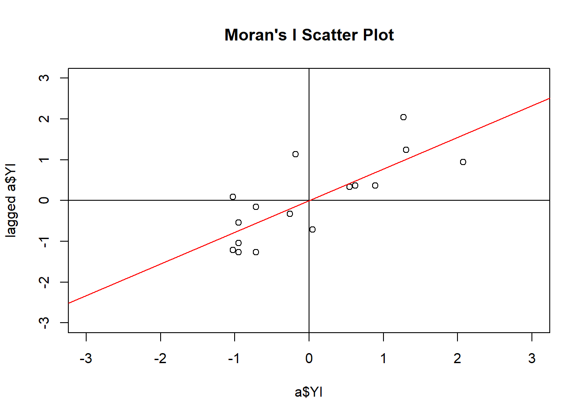
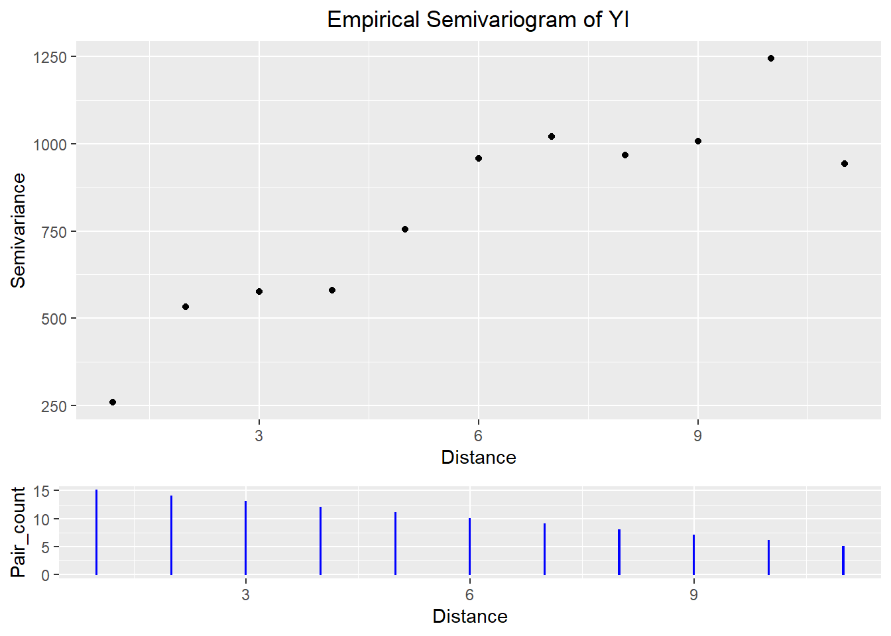

Chapter 3 Exercise 9.4
3.1 Load packages
Here is the R code to download the required packages for this exercise.
## Loading required package: pacman3.2 Data
This is equivalent to data step in SAS. Here, the data is entered inside a function called tibble.
# Enter data
a <- tibble(I = 1:16, YI = c(41, 60, 81, 22, 8, 20, 28, 2,
0, 2, 2, 8, 0, 43, 61, 50)) %>%
# creat new variable East and North
mutate(East = 1,
North = I)
# print the data
a## # A tibble: 16 x 4
## I YI East North
## <int> <dbl> <dbl> <int>
## 1 1 41 1 1
## 2 2 60 1 2
## 3 3 81 1 3
## 4 4 22 1 4
## 5 5 8 1 5
## 6 6 20 1 6
## 7 7 28 1 7
## 8 8 2 1 8
## 9 9 0 1 9
## 10 10 2 1 10
## 11 11 2 1 11
## 12 12 8 1 12
## 13 13 0 1 13
## 14 14 43 1 14
## 15 15 61 1 15
## 16 16 50 1 163.3 Autocorrelation statistics
# visualize the data
ggplot(data = a) +
geom_point(mapping = aes(x = East, y = North, size = YI, color = YI)) +
ggtitle("Spatial Distribution of YI Observation") +
theme(plot.title = element_text(hjust = 0.5))
# calculate Moran's I
Coords <- a %>%
dplyr::select(East, North)
mI <- moransI(Coords, Bandwidth = 1, a$YI)
# print Moran's I table
moran.table <- tribble(
~`Moran's I`, ~`Expected I`, ~`Z randomization`, ~`P value randomization`,
#------------/--------------/-------------------/------------------------
mI$Morans.I, mI$Expected.I, mI$z.randomization, mI$p.value.randomization
)
moran.table## # A tibble: 1 x 4
## `Moran's I` `Expected I` `Z randomization` `P value randomization`
## <dbl> <dbl> <dbl> <dbl>
## 1 0.625 -0.0667 2.81 0.00499
# calculate geary's c
Coords_num <- coordinates(Coords)
# create an object of class 'nb' so that it can be used with function from packege `spdep`
Coords_nb <- knn2nb(knearneigh(Coords_num))
# create a 'listw' object for use in the function `geary.test`
coords_listw <- nb2listw(Coords_nb)
gearyC <- geary.test(a$YI, coords_listw, alternative = "two.sided")
gearyC##
## Geary C test under randomisation
##
## data: a$YI
## weights: coords_listw
##
## Geary C statistic standard deviate = 2.5826, p-value = 0.009806
## alternative hypothesis: two.sided
## sample estimates:
## Geary C statistic Expectation Variance
## 0.37085605 1.00000000 0.059344733.4 First variogram
We will use the package geoR to construct empricial variogram, and then draw them using package ggplot2.
## variog: computing omnidirectional variogram# extract data from object v1 for plotting
v1_plot_data <- cbind(v1$u, v1$v, v1$n) %>%
as.data.frame() %>%
dplyr::rename(Distance = V1,
Semivariance = V2,
Pair_count = V3)
# in the table below, gamma is semivariance
v1_plot_data## Distance Semivariance Pair_count
## 1 1 258.8333 15
## 2 2 533.0000 14
## 3 3 576.6154 13
## 4 4 580.1667 12
## 5 5 754.0000 11
## 6 6 958.2000 10
## 7 7 1020.4444 9
## 8 8 966.7500 8
## 9 9 1006.2857 7
## 10 10 1244.6667 6
## 11 11 941.8000 5# plot variogram
v1_plot_vario <- ggplot(data = v1_plot_data) +
geom_point(mapping = aes(x = Distance, y = Semivariance)) +
ggtitle("Empirical Semivariogram of YI") +
theme(plot.title = element_text(hjust = 0.5))
# plot pair counts
v1_plot_pair_count <- ggplot(data = v1_plot_data) +
geom_col(mapping = aes(x = Distance, y = Pair_count), width = 0.01, color = "blue")
# stack two plots
grid.arrange(v1_plot_vario, v1_plot_pair_count,
ncol = 1, heights = c(3, 1))
3.5 Second variogram
Plot robust and classical variogram together.
# fit robust variogram
v1_robust <- variog(coords = Coords_num, data = a$YI, breaks = seq(0.5, 15.5),
max.dist = 11, estimator.type = "modulus")## variog: computing omnidirectional variogram# extract the data
v1_robust_data <- cbind(v1_robust$u, v1_robust$v, v1_robust$n) %>%
as.data.frame() %>%
dplyr::rename(Distance = V1,
Semivariance = V2,
Pair_count = V3)
# plot robust variogram
v1_robust_vario <- ggplot(data = v1_robust_data) +
geom_point(mapping = aes(x = Distance, y = Semivariance)) +
ggtitle("Empirical Semivariogram of YI - Robust estimation") +
theme(plot.title = element_text(hjust = 0.5))
v1_robust_vario
# combine robust and classical variogram
var_comb <- v1_robust_data %>%
# combine robust and classical variogram datasets
dplyr::rename(Semivariance_robust = Semivariance) %>%
bind_cols(dplyr::select(v1_plot_data, Semivariance)) %>%
gather(key = "Semivariance_type", value = "Semivariance", -c(Distance, Pair_count)) %>%
# plot
ggplot() +
geom_point(mapping = aes(x = Distance, y = Semivariance, color = Semivariance_type)) +
ggtitle("Empirical Semivariogram for YI") +
theme(plot.title = element_text(hjust = 0.5))
var_comb
3.6 Variogram model selection
We will use the package gstat and automap for variogram model selection
# specify coordinates in the dataset
coordinates(a) = ~East+North
# select the best model out of exponential, spherical, and gaussian
autofitVariogram(YI ~ East + North, a, model = c("Sph", "Exp", "Gau"))## $exp_var
## np dist gamma dir.hor dir.ver id
## 1 15 1 258.8333 0 0 var1
## 2 14 2 533.0000 0 0 var1
## 3 13 3 576.6154 0 0 var1
## 4 12 4 580.1667 0 0 var1
## 5 11 5 754.0000 0 0 var1
##
## $var_model
## model psill range
## 1 Nug 0.0000 0.000000
## 2 Exp 854.3133 2.575499
##
## $sserr
## [1] 28783.32
##
## attr(,"class")
## [1] "autofitVariogram" "list"## np dist gamma dir.hor dir.ver id
## 1 15 1 NaN 0 0 var1
## 2 14 2 NaN 0 0 var1
## 3 13 3 NaN 0 0 var1
## 4 12 4 NaN 0 0 var1
## 5 11 5 NaN 0 0 var1
## 6 10 6 NaN 0 0 var1
## 7 9 7 NaN 0 0 var1
## 8 8 8 NaN 0 0 var1
## 9 7 9 NaN 0 0 var1
## 10 6 10 NaN 0 0 var1
## 11 5 11 NaN 0 0 var1
## Warning in fit.variogram(v_emp, vgm("Exp")): singular model in variogram
## fit## Error in if (direct[direct$id == id, "is.direct"] && any(model$psill < : missing value where TRUE/FALSE needed## Error in eval(expr, envir, enclos): object 'v_exp' not found## Warning in fit.variogram(v_emp, vgm("Sph")): singular model in variogram
## fit## Error in if (direct[direct$id == id, "is.direct"] && any(model$psill < : missing value where TRUE/FALSE needed## Warning in fit.variogram(v_emp, vgm("Gau")): singular model in variogram
## fit## Error in if (direct[direct$id == id, "is.direct"] && any(model$psill < : missing value where TRUE/FALSE needed## Error in variogramLine(v_exp, maxdist = 11): object 'v_exp' not found## Error in variogramLine(v_sph, maxdist = 11): object 'v_sph' not found## Error in variogramLine(v_gau, maxdist = 11): object 'v_gau' not found# plot emprical and fitted variograms together
# specify color for legends
legend_color <- c("Empirical" = "blue", "Exponential" = "blue",
"Spherical" = "orange", "Gaussian" = "green")
ggplot(data = v_emp) +
geom_point(mapping = aes(x = dist, y = gamma, fill = "Empirical"), color = "blue") +
geom_line(data = v_exp_line, mapping = aes(x = dist, y = gamma, color = "Exponential")) +
geom_line(data = v_sph_line, mapping = aes(x = dist, y = gamma, color = "Spherical")) +
geom_line(data = v_gau_line, mapping = aes(x = dist, y = gamma, color = "Gaussian")) +
scale_color_manual(name = "", values = legend_color) +
scale_fill_manual(name = "", values = legend_color) +
labs(x = "Distance",
y = "Semivariance")## Error in fortify(data): object 'v_exp_line' not found